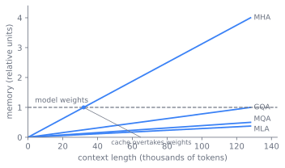

6 Transformer Architecture and Its Variants
A frontier dense model is a stack of nearly identical transformer blocks, and that block has barely changed since 2023 (Touvron et al. 2023; Bai et al. 2023). Almost everything inside it is a question that has been answered and closed: how to normalize, how to activate, how to encode position. One question stays open, and it is not in the math of the forward pass at all. It is a cost that lives in memory during generation, the size of the key-value cache, and it is the only force still strong enough to make an architect redraw a working block. This chapter reads the block twice: once as a settled forward pass, and once as the single open cost that drives the attention variants from MHA through MQA and GQA to MLA.
6.1 One block, two jobs
A transformer block has to do two distinct jobs and do them in a way that survives being stacked a hundred times deep. It must let tokens exchange information, since a language model is useless if position \(i\) cannot see position \(j\), and it must transform each token’s features, which is where most of the model’s knowledge lives. Stacking those two operations naively does not work: a deep residual network is hard to keep trainable, the activation and normalization choices decide whether the gradient survives to the bottom layer, and attention, the one operation that mixes across positions, costs \(O(n^2)\) in compute and leaves behind a cache that grows without bound during generation.
The right way to read a block is not “attention, then MLP.” It is two sublayers that each read a shared residual stream, compute a delta, and write it back:
\[ x = x + \text{sublayer}(\text{norm}(x)) \]
The residual stream is the model’s working memory, a vector of width \(d_{\text{model}}\) carried from the embedding to the final layer. Each block gets one pass to read it and add to it. Depth is the number of such read-modify-write passes; width is how much the stream can hold at once. This framing makes the rest of the design fall out. Figure fig-transformer-block draws one pre-norm block this way: the residual stream runs straight down as an identity path, and each sublayer branches off it through a norm, computes a delta, and adds the delta back.
The first sublayer is attention, the only place tokens exchange information, and the subject of the second half of this chapter. The second is a position-wise MLP applied to each token independently, and it holds most of the parameters: a feed-forward layer that expands to roughly four times \(d_{\text{model}}\) and projects back costs about \(8 \cdot d_{\text{model}}^2\) per block, dwarfing attention’s projections. Knowledge lives mostly in the MLP; mixing lives entirely in attention.
6.2 Three questions the field has closed
Three choices keep a deep stack of these blocks trainable, and all three are settled. They are worth reading not as live debates but as a record of how the consensus stack was assembled, one near-free win at a time.
Normalization has two orthogonal axes. The form is LayerNorm (Ba et al. 2016), which re-centers and re-scales with a learned gain and bias, versus RMSNorm (Zhang and Sennrich 2019), which only re-scales, dropping the mean subtraction and the bias. Mean-centering buys little, so RMSNorm is cheaper and now the default. The placement is post-norm, the original design with the norm after the residual add (Vaswani et al. 2017), versus pre-norm, with the norm inside the branch and an identity path straight down the residual stream. Pre-norm keeps a clean gradient highway from the top of the stack to the bottom, and it is what lets a deep model train without elaborate warmup (Xiong et al. 2020).
Activation has a clear lineage: ReLU, simple but prone to dead units, then GeLU (Hendrycks and Gimpel 2016), the smooth BERT and GPT-2 default, then gated linear units, of which SwiGLU is the modern winner (Shazeer 2020). SwiGLU computes \((\text{Swish}(xW_1) \odot xV)\, W_2\), three matrices rather than two. The detail readers get wrong: the hidden dimension is scaled by about \(2/3\) so the gated FFN keeps the same parameter count as a plain \(4\times\) FFN, which is what makes a like-for-like comparison fair.
Position is the third. Attention is permutation-invariant on its own, so the block must be told where tokens sit. RoPE rotates the query and key vectors by an angle proportional to absolute position, in two-dimensional subspace pairs, so that the dot product \(q \cdot k\) depends only on the relative offset \(i - j\) (Su et al. 2021). A base-frequency parameter, theta, sets how fast the rotation turns and quietly governs how far context can later be extended. ALiBi takes the other route: it adds a static, head-specific linear penalty \(-m \cdot (i - j)\) to the pre-softmax scores, with no learned positional parameters at all (Press et al. 2022). The contrast is rotations on vectors versus biases on scores. RoPE became the dense default.
One bracket choice frames the stack from outside. Embedding and unembedding sit at the two ends: the input embedding maps token ids to vectors, the LM head maps the final residual state to vocabulary logits. Weight tying shares one matrix for both (Press and Wolf 2017). This is a genuine tension, not a default. Tying saves \(\text{vocab} \cdot d\) parameters and regularizes small models, but once the vocabulary is large the saving is marginal, and most large modern models leave the two untied.
These choices, assembled, are the whole settled block. Vaswani et al. shipped the original transformer with post-norm and a plain FFN (Vaswani et al. 2017). Post-norm diverges at depth without heavy warmup, so pre-norm replaced it (Xiong et al. 2020). RMSNorm dropped LayerNorm’s mean subtraction at no measured quality cost (Zhang and Sennrich 2019). SwiGLU edged out GeLU under the \(2/3\) rescaling (Shazeer 2020). RoPE became the positional default over ALiBi (Su et al. 2021). By the time of LLaMA and Qwen, the consensus had set: pre-norm, RMSNorm, a SwiGLU FFN, RoPE, and no bias terms anywhere (Touvron et al. 2023; Bai et al. 2023). Strikingly little has changed in the dense block since 2023. The action moved to data, scale, and post-training.
6.3 The one cost that won’t settle
Now attention itself, the sublayer that mixes across positions and the source of the chapter’s live constraint. Scaled dot-product attention projects each token to a query, key, and value, then computes (Vaswani et al. 2017)
\[ \text{Attention}(Q, K, V) = \text{softmax}\!\left(\frac{QK^\top}{\sqrt{d}}\right) V \]
The \(\sqrt{d}\) divisor keeps the logits from growing with dimension and saturating the softmax. A causal mask zeros the upper triangle so a token attends only to the past. The cost is \(O(n^2)\) in both compute and the score matrix, which is the pressure behind every efficiency trick downstream.
Multi-head attention splits \(d\) into \(h\) heads so attention can attend to several subspaces at once, concatenating their outputs and projecting once more (Vaswani et al. 2017). Heads are cheap in parameters but not free at inference, because each head carries its own keys and values, and those must be kept.
That cost is the spine of the chapter. During autoregressive decode, the keys and values for every past token are cached so they are not recomputed at each step. The cache size is
\[ 2 \cdot \text{layers} \cdot \text{heads} \cdot d_{\text{head}} \cdot \text{seq} \cdot \text{batch} \cdot \text{dtype} \]
It grows linearly with context length and batch size, and at long context it overtakes the model weights themselves. Figure fig-06-transformer-architecture-1 draws that linear growth and the crossover with a flat weights line, with the slope of each variant set by how many KV heads it keeps. This single fact is what explains MQA, GQA, and MLA. The question each answers is: how much of the KV cache can you delete before quality breaks?

The first answer cuts the most. Multi-query attention shares a single key/value head across all query heads, cutting the cache by a factor of \(h\) (Shazeer 2019). The cut is dramatic, but collapsing to one KV head can destabilize training and drop quality non-gracefully. The second answer interpolates. Grouped-query attention shares K and V within \(g\) groups of query heads, recovering MHA (\(g = h\)) at one extreme and MQA (\(g = 1\)) at the other, and it can be uptrained cheaply from an existing MHA checkpoint (Ainslie et al. 2023). GQA recovers most of the quality at most of the savings and became the default in the LLaMA and Qwen families (Touvron et al. 2023; Bai et al. 2023). Figure fig-kv-sharing shows the mechanism: the cache holds one K and V per distinct KV head, so the savings come entirely from how many query heads are made to share each one.
Multi-head latent attention, introduced in DeepSeek-V2, attacks the same cost from a different angle (DeepSeek-AI 2024). Instead of sharing heads, it projects K and V down into a low-rank latent vector that is cached in place of the full per-head K and V, decompressing on the fly, with a decoupled RoPE component carried alongside. The pitch is GQA-class cache savings, or better, at MHA-class quality. It is the other point on the cache-compression frontier that Figure fig-cache-frontier lays out.
flowchart LR MHA["MHA<br/>h KV heads<br/>full quality, full cache"] --> GQA["GQA<br/>g KV groups<br/>most quality, fraction of cache"] GQA --> MQA["MQA<br/>1 KV head<br/>smallest cache, quality risk"] MHA --> MLA["MLA<br/>low-rank latent<br/>compressed cache, claims MHA quality"]
FlashAttention belongs to this story only as a reminder of what these variants do not solve. It keeps attention exact and makes the \(O(n^2)\) score matrix affordable by never writing it to high-bandwidth memory, but it does not shrink the KV cache, which is a memory footprint, not a compute kernel (Dao et al. 2022). The serving-time mechanics of that kernel and of cache paging belong to sec-faster-decoding and sec-memory-scheduling.
TipConstraint arrow
The key-value cache size motivates an attention variant. MHA’s cache grows with the number of heads, and at long context and large batch it overtakes the weights, so an architect trades head independence for a smaller cache: MQA shares one KV head, GQA shares within groups, MLA compresses to a latent. None of these change what attention computes in principle. They exist because a downstream cost, the memory a decoding server must hold per sequence, reaches up and reshapes the block. The serving pressure in sec-serving-problem is what makes a working block worth touching at all.
ImportantWhat’s contested
Whether MLA actually breaks the quality-versus-cache trade is not settled. The DeepSeek position is that latent compression delivers cache savings at MHA-class quality, dominating GQA on the frontier (DeepSeek-AI 2024). The conservative position is that GQA, which is simpler, uptrains from an existing MHA checkpoint, and has been validated across many shipped models (Ainslie et al. 2023), remains the safe default, and that MLA’s advantage is entangled with the rest of the DeepSeek recipe and harder to transfer than a single comparison suggests. The two coexist in production today: most open models use GQA, DeepSeek uses MLA. Treat the choice as open, not as a settled win for either.
6.4 Reading the dials
Every choice above is a balance with a knee. Set side by side, they are the dials an architect actually turns.
- Norm placement, pre versus post. Post-norm can reach slightly better final loss when it trains at all, but it is unstable at depth without heavy warmup and careful initialization. Pre-norm trades a sliver of peak quality for a robustly trainable gradient highway, and wins in practice (Xiong et al. 2020).
- Norm form, LayerNorm versus RMSNorm. Mean-centering buys little. RMSNorm drops it for lower cost and one fewer parameter set, a near-free win, now default (Zhang and Sennrich 2019).
- Activation choice. SwiGLU’s gain is small but consistent, and effectively free under the \(2/3\) hidden-dimension rescaling (Shazeer 2020). The cost is a third weight matrix and slightly more irregular shapes for kernels and parallelism.
- Positional scheme as a one-way door. The base scheme is chosen at run start and is expensive to change. It constrains how far context can later be extended and how well the model extrapolates. RoPE’s theta base is a small knob with large long-context consequences, the mechanisms for which are sec-structured-long-context.
- Weight tying. A real tension: parameter saving and small-model regularization against the freedom and marginal cost at scale that lead large models to untie (Press and Wolf 2017).
- Depth versus width. At a fixed parameter budget, deeper means more sequential composition but harder training and parallelism, with pipeline bubbles and serial latency, while wider means more per-step compute, friendlier to tensor parallelism, and easier to keep stable. This is co-designed with the systems layer in sec-training-at-scale, not resolved in isolation, and the quality-per-FLOP side of it is set by sec-scaling-laws.
- KV cache versus quality, the dominant axis. MHA gives full quality at full cache, GQA most quality at a fraction of cache, MQA the smallest cache at a quality and stability risk, and MLA claims to break the trade through latent compression. The right point depends on target context length and batch, since the cache scales with both.
6.5 Building the block, and how it breaks
Assembling the consensus dense block is mostly bookkeeping once the choices above are made: pre-norm with RMSNorm on each sublayer’s input, a SwiGLU FFN with the hidden dimension rescaled by \(2/3\), RoPE applied to queries and keys before the dot product, GQA grouping for the KV heads, and no bias terms anywhere. A reader can recognize this shape across nearly every open dense model since LLaMA (Touvron et al. 2023).
The failure modes are worth naming because each bites at a different time. Post-norm at depth blows up or stalls early in training, the classic symptom pre-norm was invented to fix (Xiong et al. 2020). A positional scheme or a too-small RoPE theta chosen for short context caps long-context behavior later, and the cost surfaces only at the first context-window bump. Forgetting the \(2/3\) rescaling when switching to a gated FFN silently inflates or shrinks the parameter budget and breaks like-for-like comparisons. Untied, unregularized output logits can drift without bound, which is why z-loss guards them, with mechanics in sec-scaling-laws. And collapsing too far toward MQA can destabilize training and drop quality non-gracefully, which is the reason GQA exists (Ainslie et al. 2023): the cheapest cache is not safely the best one.
6.6 Further reading
- Vaswani et al., “Attention Is All You Need,” 2017 (NeurIPS). arXiv:1706.03762
- Ba, Kiros & Hinton, “Layer Normalization,” 2016. arXiv:1607.06450
- Zhang & Sennrich, “Root Mean Square Layer Normalization” (RMSNorm), 2019 (NeurIPS). arXiv:1910.07467
- Xiong et al., “On Layer Normalization in the Transformer Architecture,” 2020 (ICML). arXiv:2002.04745
- Hendrycks & Gimpel, “Gaussian Error Linear Units (GELUs),” 2016. arXiv:1606.08415
- Shazeer, “GLU Variants Improve Transformer” (SwiGLU), 2020. arXiv:2002.05202
- Su et al., “RoFormer: Enhanced Transformer with Rotary Position Embedding” (RoPE), 2021. arXiv:2104.09864
- Press, Smith & Lewis, “Train Short, Test Long: Attention with Linear Biases Enables Input Length Extrapolation” (ALiBi), 2022 (ICLR). arXiv:2108.12409
- Press & Wolf, “Using the Output Embedding to Improve Language Models” (weight tying), 2017 (EACL). arXiv:1608.05859
- Shazeer, “Fast Transformer Decoding: One Write-Head is All You Need” (MQA), 2019 (arXiv). arXiv:1911.02150
- Ainslie et al., “GQA: Training Generalized Multi-Query Transformer Models from Multi-Head Checkpoints,” 2023 (EMNLP). aclanthology.org/2023.emnlp-main.298
- Dao et al., “FlashAttention: Fast and Memory-Efficient Exact Attention with IO-Awareness,” 2022 (NeurIPS). arXiv:2205.14135
- DeepSeek-AI, “DeepSeek-V2: A Strong, Economical, and Efficient Mixture-of-Experts Language Model,” 2024 (arXiv), introduces multi-head latent attention (MLA). arXiv:2405.04434
- Touvron et al., “LLaMA: Open and Efficient Foundation Language Models,” 2023. arXiv:2302.13971
- Bai et al., “Qwen Technical Report,” 2023. arXiv:2309.16609
- Yang et al., “Qwen2 Technical Report,” 2024. arXiv:2407.10671
- Qwen Team, “Qwen2.5 Technical Report,” 2024. arXiv:2412.15115
Ainslie, Joshua, James Lee-Thorp, Michiel de Jong, Yury Zemlyanskiy, Federico Lebron, and Sumit Sanghai. 2023. “GQA: Training Generalized Multi-Query Transformer Models from Multi-Head Checkpoints.” Proceedings of the 2023 Conference on Empirical Methods in Natural Language Processing (EMNLP). https://aclanthology.org/2023.emnlp-main.298/.
Ba, Jimmy Lei, Jamie Ryan Kiros, and Geoffrey E. Hinton. 2016. Layer Normalization. https://arxiv.org/abs/1607.06450.
Bai, Jinze, Shuai Bai, Yunfei Chu, et al. 2023. Qwen Technical Report. https://arxiv.org/abs/2309.16609.
Dao, Tri, Daniel Y. Fu, Stefano Ermon, Atri Rudra, and Christopher Ré. 2022. “FlashAttention: Fast and Memory-Efficient Exact Attention with IO-Awareness.” Advances in Neural Information Processing Systems (NeurIPS). https://arxiv.org/abs/2205.14135.
DeepSeek-AI. 2024. DeepSeek-V2: A Strong, Economical, and Efficient Mixture-of-Experts Language Model. https://arxiv.org/abs/2405.04434.
Hendrycks, Dan, and Kevin Gimpel. 2016. Gaussian Error Linear Units (GELUs). https://arxiv.org/abs/1606.08415.
Press, Ofir, Noah A. Smith, and Mike Lewis. 2022. “Train Short, Test Long: Attention with Linear Biases Enables Input Length Extrapolation.” International Conference on Learning Representations (ICLR). https://arxiv.org/abs/2108.12409.
Press, Ofir, and Lior Wolf. 2017. “Using the Output Embedding to Improve Language Models.” Proceedings of the 15th Conference of the European Chapter of the Association for Computational Linguistics (EACL). https://arxiv.org/abs/1608.05859.
Shazeer, Noam. 2019. Fast Transformer Decoding: One Write-Head Is All You Need. https://arxiv.org/abs/1911.02150.
Shazeer, Noam. 2020. GLU Variants Improve Transformer. https://arxiv.org/abs/2002.05202.
Su, Jianlin, Yu Lu, Shengfeng Pan, Ahmed Murtadha, Bo Wen, and Yunfeng Liu. 2021. RoFormer: Enhanced Transformer with Rotary Position Embedding. https://arxiv.org/abs/2104.09864.
Touvron, Hugo, Thibaut Lavril, Gautier Izacard, et al. 2023. LLaMA: Open and Efficient Foundation Language Models. https://arxiv.org/abs/2302.13971.
Vaswani, Ashish, Noam Shazeer, Niki Parmar, et al. 2017. “Attention Is All You Need.” https://arxiv.org/abs/1706.03762.
Xiong, Ruibin, Yunchang Yang, Di He, et al. 2020. “On Layer Normalization in the Transformer Architecture.” Proceedings of the 37th International Conference on Machine Learning (ICML). https://arxiv.org/abs/2002.04745.
Zhang, Biao, and Rico Sennrich. 2019. “Root Mean Square Layer Normalization.” Advances in Neural Information Processing Systems (NeurIPS). https://arxiv.org/abs/1910.07467.